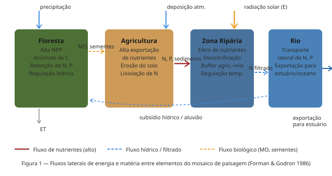
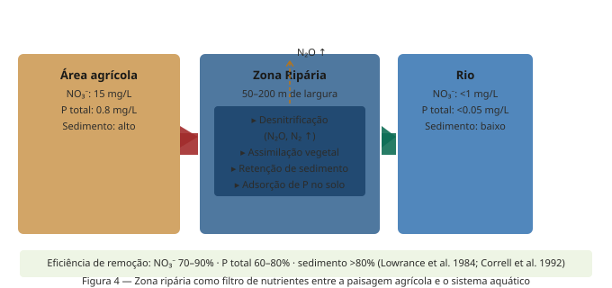
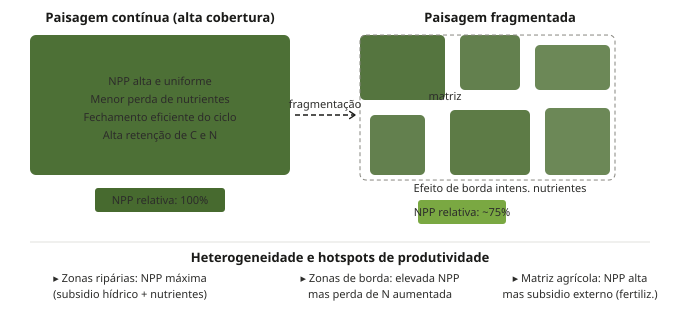
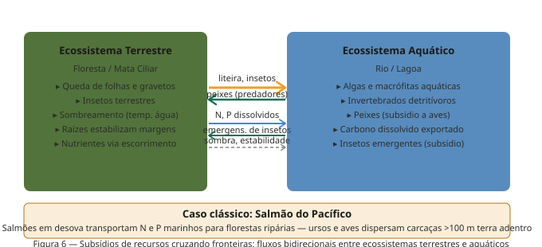
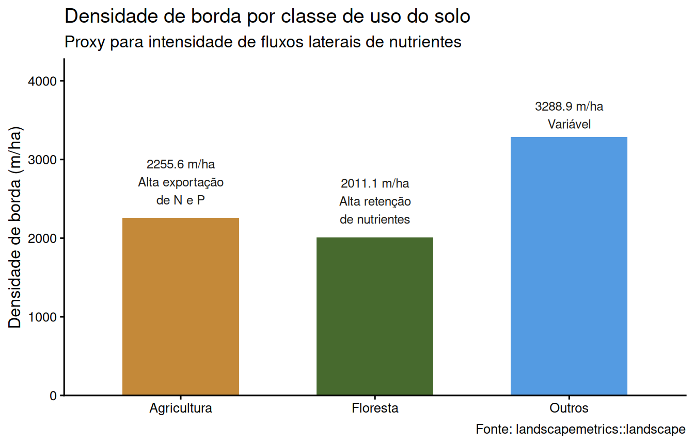
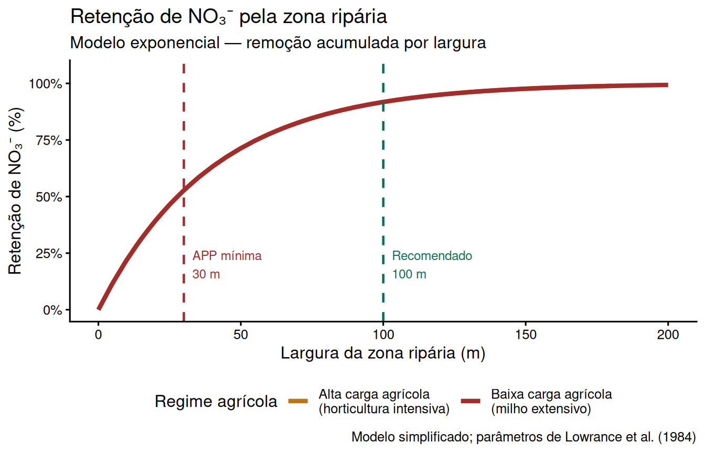

Semana 08: Fluxos de Energia e Ciclagem de Nutrientes no Nível de Paisagem
Padrão espacial, heterogeneidade e fluxos biogeoquímicos
Autor
Prof. Felipe Melo
Data de Publicação
26 de junho de 2026
Apresentação da aula
Use as setas ← → para navegar. Pressione F para tela cheia e ? para ver todos os atalhos do teclado.
1 Introdução
As semanas anteriores focaram em como a estrutura da paisagem — fragmentação, conectividade, dinâmica metapopulacional — molda a distribuição e persistência das espécies. Esta semana fazemos a transição para a função da paisagem: como o padrão espacial dos elementos do mosaico controla os fluxos de energia e a ciclagem de nutrientes.
A ideia central é que uma paisagem não é apenas um conjunto de fragmentos de habitat. É um mosaico biogeoquimicamente ativo, onde energia e matéria se movem continuamente entre elementos — entre florestas, campos agrícolas, zonas ripárias e cursos d’água. Compreender esses fluxos é essencial para entender a produtividade das paisagens, a qualidade da água, o sequestro de carbono e a sustentabilidade dos serviços ecossistêmicos.
NotaDefinição de Forman & Godron (1986)
A função da paisagem consiste nos fluxos de energia, materiais e espécies entre os elementos do mosaico espacial. Enquanto a estrutura da paisagem descreve o que está onde, a função descreve o que se move e como.
2 Fluxos no mosaico de paisagem
2.1 Tipos de fluxos
Em uma paisagem heterogênea, três grandes categorias de fluxos operam simultaneamente:
Fluxos de energia: a radiação solar é capturada diferentemente em cada elemento do mosaico — uma floresta densa intercepta e transforma mais energia que um campo aberto. A energia flui lateralmente via transporte de matéria orgânica, animais e água. A produtividade primária líquida (NPP) integra esses fluxos em cada patch.
Fluxos de materiais: nutrientes (N, P, C, Ca²⁺, K⁺), sedimentos e água se movem entre patches via escoamento superficial, percolação no solo, vento e transporte biológico. Esses fluxos são altamente dependentes da posição topográfica e do tipo de uso do solo.
Fluxos de organismos: plantas dispersam propágulos, animais transportam nutrientes em seus corpos, microrganismos migram com o movimento da água. Esses fluxos biológicos são mediados pela conectividade funcional (semana 6) e pela estrutura metapopulacional (semana 7).

Figura 1 — Fluxos laterais de energia e matéria entre os quatro elementos principais do mosaico de paisagem.
2.2 Heterogeneidade como motor dos fluxos
A heterogeneidade espacial é condição necessária para os fluxos laterais: se todos os patches fossem idênticos, não haveria gradientes de concentração para impulsionar o movimento de materiais. São as diferenças de qualidade, topografia, cobertura e uso do solo entre os elementos do mosaico que geram os gradientes que movem energia e matéria através da paisagem.
A heterogeneidade espacial determina a magnitude e direção dos fluxos de matéria, como água, nutrientes e substâncias químicas, tanto em tempo como no espaço. Isso inclui o entendimento de contínuos ambientais, que requer a integração de abordagens usadas em geomorfologia, análise de superfície e estatística espacial.
3 Ciclagem de nutrientes em escala de paisagem
3.1 Do ecossistema à paisagem
A ecologia de ecossistemas clássica estuda a ciclagem de nutrientes dentro dos limites de um único ecossistema (entradas e saídas, ciclos internos entre solo, planta e decompositores). A ecologia de paisagens adiciona uma dimensão fundamental: os nutrientes cruzam as fronteiras entre ecossistemas, e esses fluxos laterais podem ser tão importantes quanto os ciclos internos.
Um ecossistema florestal não apenas recicla nitrogênio internamente — ele exporta NO₃⁻ para riachos, recebe deposição atmosférica de N, e pode receber N via migrações de animais que se alimentaram em outros patches. A ciclagem efetiva de nutrientes em uma paisagem é o resultado integrado de todos esses processos.
Figura 2 — Ciclo do nitrogênio em escala de paisagem: fluxos internos (vegetação-solo-micro-organismos) e exportação lateral via lixiviação e volatilização.
3.2 Os principais nutrientes e seus comportamentos espaciais
Nitrogênio (N): o nutriente mais estudado em escala de paisagem. O N inorgânico (principalmente NO₃⁻) é altamente solúvel e se move facilmente com a água, o que o torna o marcador mais usado para avaliar a integridade biogeoquímica de bacias hidrográficas. Paisagens com alta proporção de área agrícola exportam ordens de magnitude mais N do que paisagens florestadas.
Fósforo (P): menos solúvel que o N, o P se move principalmente adsorvido a partículas de solo. Assim, a erosão é o principal vetor de exportação de P em paisagens agrícolas. As zonas ripárias são eficientes na retenção de P por adsorção ao solo e pela captação vegetal.
Carbono (C): o fluxo de C orgânico dissolvido (DOC) de paisagens florestadas para sistemas aquáticos é um componente significativo do balanço global de carbono. Florestas tropicais em bom estado de conservação são sumidouros líquidos de C; florestas degradadas e sistemas agrícolas podem ser fontes.
Cátions base (Ca²⁺, Mg²⁺, K⁺): liberados pelo intemperismo mineral, são essenciais para a produtividade florestal. O estudo de Hubbard Brook revelou que a exportação de cátions pode ser acelerada dramaticamente por perturbações como o desmatamento.
4 A abordagem de bacia hidrográfica
4.1 O método de pequenas bacias
O estudo mais influente sobre fluxos de nutrientes em paisagens foi o Experimento Hubbard Brook, iniciado por Gene Likens e Herbert Bormann em 1963 nas Montanhas Brancas de New Hampshire. A abordagem central — que se tornou o método padrão para estudar biogeoquímica de paisagens — é tratar uma pequena bacia hidrográfica como um sistema fechado com entradas mensuráveis (precipitação e deposição atmosférica) e saídas mensuráveis (fluxo fluvial).
O balanço simples Entradas − Saídas = Acúmulo (ou perda) de nutrientes permite quantificar como cada elemento do mosaico (floresta, área degradada, zona ripária) contribui para a retenção ou exportação de nutrientes.
Figura 3 — Abordagem de bacia hidrográfica: balanço entre entradas e saídas como método para quantificar fluxos em paisagens.
4.2 O experimento de desmatamento de Hubbard Brook
O experimento mais revelador de Hubbard Brook consistiu no desmatamento total de uma sub-bacia (Watershed 2) em 1965–1966, seguido de inibição da regeneração com herbicida. Os resultados foram dramáticos:
A exportação de NO₃⁻ no fluxo fluvial aumentou aproximadamente 40 vezes em comparação com a bacia controle intacta
O escoamento total de água aumentou cerca de 4 vezes no verão (sem transpiraçao vegetal)
A exportação de cátions base (Ca²⁺, K⁺) aumentou substancialmente
Esses resultados demonstraram que a vegetação é o principal regulador da retenção de nutrientes em paisagens florestadas. Quando a vegetação é removida, o ciclo interno de nutrientes colapsa e a exportação lateral aumenta abruptamente. Isso tem implicações diretas para o planejamento do uso do solo em bacias hidrográficas.
5 Zonas ripárias: filtros biogeoquímicos da paisagem
5.1 A função de filtro
As zonas ripárias — as faixas de vegetação que margeiam rios e lagos — são os elementos mais biogeoquimicamente ativos da paisagem. Funcionam como filtros que interceptam nutrientes e sedimentos oriundos de áreas adjacentes (especialmente agrícolas) antes que cheguem aos sistemas aquáticos.
Os principais processos de remoção de nutrientes nas zonas ripárias são:
Desnitrificação: bactérias anaeróbias no solo saturado convertem NO₃⁻ em N₂ e N₂O (gases), removendo o N da paisagem. Este processo é altamente eficiente em solos ripários saturados, que combinam alto NO₃⁻ proveniente da agricultura com as condições anaeróbias necessárias para as bactérias desnitrificantes.
Assimilação vegetal: plantas ripárias (especialmente durante a estação de crescimento) absorvem grandes quantidades de N e P da água subterrânea que flui em direção ao rio.
Adsorção de P: o solo mineral das zonas ripárias tem alta capacidade de adsorver P solúvel, convertendo-o em formas menos móveis.
Retenção de sedimentos: a rugosidade da vegetação ripária reduz a velocidade do escoamento superficial, promovendo a deposição de partículas de solo e os nutrientes a elas adsorvidos.

Figura 4 — Zona ripária como filtro de nutrientes: processos de remoção e eficiência comparada entre paisagem agrícola e aquática.
5.2 Zona ripária e qualidade da água
A eficiência das zonas ripárias como filtros depende de sua largura, continuidade ao longo do curso d’água, tipo de vegetação e profundidade do lençol freático. Faixas de 50–100 m de mata ciliar contínua podem remover 70–90% do NO₃⁻ e 60–80% do P total que entram no sistema vindo da área agrícola adjacente.
No Brasil, o Código Florestal (Lei 12.651/2012) define as Áreas de Preservação Permanente (APPs) ripárias com larguras mínimas de 30 m (para rios de até 10 m de largura) até 500 m (rios com mais de 600 m). As evidências biogeoquímicas sugerem que mesmo as APPs de largura mínima são insuficientes para filtrar a carga de N proveniente de áreas agrícolas intensivas — um ponto de debate científico e político importante no Brasil.
AvisoParadoxo das APPs mínimas
Faixas ripárias de 30 m são suficientes para a maioria dos processos de estabilização de margens, mas insuficientes para a retenção eficiente de N em paisagens com alta carga agrícola. A função biogeoquímica exige faixas de 50–200 m, dependendo da intensidade agrícola e da topografia.
6 Padrão de paisagem e produtividade primária
6.1 Como a configuração espacial afeta a NPP
A produtividade primária líquida (NPP) de uma paisagem não é simplesmente a soma das NPPs de seus elementos individuais. A configuração espacial — a forma, tamanho e arranjo dos patches — afeta a NPP total via mecanismos de borda, subsidios cruzados e heterogeneidade de recursos.
Efeito de borda na NPP: bordas de fragmentos florestais frequentemente apresentam NPP mais alta que os interiores, devido ao maior acesso a luz, água e nutrientes. Contudo, esse aumento de borda é acompanhado por maior volatilização de N, maior exportação de nutrientes e menor estoque de carbono no solo.
Subsidio hídrico e heterogeneidade topográfica: zonas ripárias e planícies de inundação têm NPP consistentemente mais alta que as encostas correspondentes, graças ao subsidio contínuo de água e nutrientes transportados do upland. Este padrão cria uma heterogeneidade de produtividade em escala de paisagem, com hotspots de alta NPP concentrados nas posições topograficamente baixas.

Figura 5 — Efeito do padrão de paisagem na NPP: paisagem contínua vs. fragmentada e hotspots de produtividade.
6.2 Sequestro de carbono em escala de paisagem
A capacidade de uma paisagem de sequestrar carbono atmosférico depende não apenas da cobertura de habitat, mas de onde esse habitat está posicionado. Florestas sobre solos orgânicos profundos (como os solos hidromórficos da Amazônia ou do Pantanal) têm stocks de carbono muito superiores às florestas sobre solos minerais.
O desmatamento e a fragmentação reduzem o sequestro de C por dois mecanismos simultâneos: (1) conversão direta de biomassa em CO₂ e (2) alteração dos fluxos laterais de C orgânico que alimentam os estoques de solo. A fragmentação, mesmo sem reduzir a cobertura total, aumenta os fluxos laterais de C para sistemas aquáticos (como CO₂ e DOC), reduzindo o sequestro líquido terrestre.
7 Subsidios cruzados entre ecossistemas
7.1 Fluxos que cruzam fronteiras de ecossistemas
Um dos fenômenos mais importantes — e historicamente subestimados — em ecologia de paisagens é o subsidio cruzado: a transferência de energia e matéria de um tipo de ecossistema para outro. Esses subsidios podem ser quantitativamente importantes para a estrutura e função de ecossistemas receptores.

Figura 6 — Subsidios cruzados bidirecionais entre ecossistemas terrestres e aquáticos.
7.2 O caso clássico: salmões do Pacífico e florestas ripárias
O exemplo mais estudado de subsidio cruzado é o dos salmões do Pacífico (Oncorhynchus spp.) que migram do oceano para desovar em rios interiores. Ao morrer após a desova, os salmões transportam quantidades substanciais de N e P marinhos para a paisagem terrestre. Ursos, aves e outros predadores consomem as carcaças e dispersam os nutrientes marinhos até dezenas a centenas de metros das margens dos rios, fertilizando florestas ripárias que de outra forma seriam limitadas por N.
7.3 Subsidios terra-água e água-terra
Terra → Água: folhas, gravetos, insetos terrestres e nutrientes dissolvidos provenientes de florestas ribeirinhas são a principal fonte de energia para invertebrados detritívoros em rios de cabeceira. Estudos em rios japoneses e norte-americanos mostraram que o desmatamento das margens reduz drasticamente a produção secundária aquática, pois remove o subsidio de matéria orgânica terrestre.
Água → Terra: insetos aquáticos (efêmeras, libélulas, dípteros) emergem em grandes quantidades e representam um subsidio significativo de energia para aves e aranhas de zonas ripárias. Em sistemas produtivos como rios e lagos de planície de inundação, esse subsidio pode sustentar densidades de aves muito superiores às suportadas pela vegetação terrestre adjacente isoladamente.
8 Distúrbio, uso do solo e fluxos biogeoquímicos
8.1 Como o uso do solo altera os fluxos
A conversão de florestas para agricultura ou pastagem é o maior disruptor dos fluxos biogeoquímicos em escala de paisagem. As principais mudanças incluem:
Aumento da exportação de NO₃⁻: a remoção da vegetação perene reduz a demanda biológica de N, permitindo que o NO₃⁻ produzido pela nitrificação seja lixiviado para as águas subterrâneas e rios
Aumento da erosão e exportação de P: a remoção da cobertura vegetal expõe o solo mineral e aumenta o escoamento superficial carregado de partículas com P adsorvido
Redução do sequestro de C: a perda de biomassa e a oxidação da matéria orgânica do solo convertem estoques terrestres de C em CO₂ atmosférico
Alteração do ciclo hidrológico: a redução da evapotranspiração aumenta o escoamento superficial e altera a sazonalidade dos fluxos de nutrientes
8.2 O papel da paisagem na qualidade da água
A composição e configuração da paisagem são os principais determinantes da qualidade da água em escala de bacia hidrográfica. Estudos na bacia do Chesapeake (EUA) mostraram que mesmo com apenas 23% de área agrícola na bacia, essa área era responsável por mais de 70% da exportação total de N.
Isso demonstra que a localização do uso do solo na paisagem importa tanto quanto sua extensão. Áreas agrícolas adjacentes a rios, em posições que drenam diretamente para cursos d’água sem passar por vegetação ripária, têm impacto biogeoquímico muito superior ao da mesma área agrícola localizada no interior da bacia.
9 Medindo fluxos de nutrientes no R
9.1 Calculando métricas de paisagem relacionadas a fluxos
Código
library(terra)library(landscapemetrics)library(dplyr)library(ggplot2)# Paisagem de exemplopaisagem <- terra::rast(landscapemetrics::landscape)# Métricas relevantes para fluxos de nutrientes:# lsm_l_ed = densidade de bordas (proxy para fluxos laterais)# lsm_l_prd = diversidade de patches (heterogeneidade)# lsm_c_pland = proporção de cada classe (composição)# lsm_c_ed = densidade de borda por classe (interface com matriz)metricas_fluxo <-calculate_lsm( paisagem,what =c("lsm_l_ed", # densidade de bordas total"lsm_l_shdi", # diversidade de Shannon (heterog.)"lsm_l_pr", # riqueza de tipos de patch"lsm_c_pland", # % de área por classe"lsm_c_ed", # densidade de borda por classe"lsm_c_lpi"# maior patch por classe (patch dominante) ))# Resumo de métricas de paisagemmetricas_paisagem <- metricas_fluxo |>filter(level =="landscape") |>select(metric, value)print(metricas_paisagem)
# A tibble: 3 × 2
metric value
<chr> <dbl>
1 ed 3778.
2 pr 3
3 shdi 1.01
9.2 Visualizando borda como proxy de fluxo lateral
Código
borda_classe <- metricas_fluxo |>filter(metric =="ed", level =="class") |>mutate(classe =case_when( class ==1~"Floresta", class ==2~"Agricultura", class ==3~"Outros" ),interpretacao =case_when( class ==1~"Alta retenção\nde nutrientes", class ==2~"Alta exportação\nde N e P", class ==3~"Variável" ) )ggplot(borda_classe, aes(x = classe, y = value, fill = classe)) +geom_col(alpha =0.85, width =0.6) +geom_text(aes(label =paste0(round(value, 1), " m/ha\n", interpretacao)),vjust =-0.3, size =3.2, color ="#1a1a18") +scale_fill_manual(values =c("Floresta"="#27500A","Agricultura"="#BA7517","Outros"="#378ADD" )) +scale_y_continuous(expand =expansion(mult =c(0, 0.3))) +labs(title ="Densidade de borda por classe de uso do solo",subtitle ="Proxy para intensidade de fluxos laterais de nutrientes",x =NULL,y ="Densidade de borda (m/ha)",caption ="Fonte: landscapemetrics::landscape" ) +theme_classic(base_size =12) +theme(legend.position ="none")

Densidade de borda por classe — quanto maior a borda, maior o potencial de fluxo lateral entre patches
9.3 Simulando retenção de nutrientes em função da cobertura ripária
Código
# Modelo simplificado de remoção exponencial# Baseado em Lowrance et al. 1984 e Correll et al. 1992retencao_riparia <-function(largura_m, carga_agricola) {# Coeficiente de remoção por metro (k) varia com condições k <-0.025# ~2.5% de remoção por metro em condições típicas retencao_pct <- (1-exp(-k * largura_m)) *100data.frame(largura = largura_m,retencao = retencao_pct,carga = carga_agricola )}larguras <-seq(0, 200, by =5)sim_data <-bind_rows(retencao_riparia(larguras, "Baixa carga agrícola\n(milho extensivo)"),retencao_riparia(larguras *0.9, "Alta carga agrícola\n(horticultura intensiva)")) |>mutate(carga =factor(carga))# Linha de referência: largura mínima APP (30 m)ggplot(sim_data, aes(x = largura, y = retencao, color = carga)) +geom_line(linewidth =1.5) +geom_vline(xintercept =30, linetype ="dashed",color ="#A32D2D", linewidth =0.8) +annotate("text", x =33, y =20, label ="APP mínima\n30 m",color ="#A32D2D", hjust =0, size =3.2) +geom_vline(xintercept =100, linetype ="dashed",color ="#0F6E56", linewidth =0.8) +annotate("text", x =103, y =20, label ="Recomendado\n100 m",color ="#0F6E56", hjust =0, size =3.2) +scale_color_manual(values =c("#BA7517", "#A32D2D")) +scale_y_continuous(labels = scales::percent_format(scale =1),limits =c(0, 105)) +labs(title ="Retenção de NO₃⁻ pela zona ripária",subtitle ="Modelo exponencial — remoção acumulada por largura",x ="Largura da zona ripária (m)",y ="Retenção de NO₃⁻ (%)",color ="Regime agrícola",caption ="Modelo simplificado; parâmetros de Lowrance et al. (1984)" ) +theme_classic(base_size =12) +theme(legend.position ="bottom")

Simulação: retenção de NO₃⁻ em função da largura da zona ripária para diferentes intensidades agrícolas
10 Síntese
A perspectiva de fluxos em escala de paisagem transforma fundamentalmente como entendemos a biogeoquímica e a produtividade dos ecossistemas. Cinco lições centrais emergem:
1. O padrão espacial controla os fluxos. A mesma quantidade de floresta pode ter impactos biogeoquímicos radicalmente diferentes dependendo de onde está na paisagem — junto ao rio ou no interior da bacia, upland ou lowland, fragmentada ou contínua.
2. As fronteiras entre elementos são zonas ativas. As bordas entre patches não são apenas linhas passivas — são zonas de transformação ativa de nutrientes, com alta desnitrificação, decomposição acelerada e gradientes biogeoquímicos intensos.
3. Os ecossistemas são abertos e interdependentes. Rios dependem das florestas ripárias para sua integridade; florestas ripárias dependem do subsidio hídrico e de nutrientes dos rios e das encostas adjacentes. Gerenciar ecossistemas isoladamente ignora estas dependências.
4. A vegetação é o principal regulador da retenção. O experimento de Hubbard Brook demonstrou que a remoção da vegetação colapsa a retenção de nutrientes, gerando exportação maciça. Conservar e restaurar a cobertura vegetal — especialmente nas posições ripárias — é a intervenção de maior eficiência biogeoquímica.
5. Qualidade da água é um indicador integrador da paisagem. O estado biogeoquímico de um rio reflete toda a composição e configuração da bacia hidrográfica a montante. Melhorar a qualidade da água exige planejar a paisagem, não apenas a faixa de proteção imediatamente às margens.
11 Leituras recomendadas
Referência
Por que ler
Forman & Godron (1986) Landscape Ecology
Definição clássica de estrutura, função e mudança em paisagens
Likens & Bormann (1974) Science 155:424–429
Abordagem de bacia hidrográfica e biogeoquímica de ecossistemas
Likens et al. (1970) Ecol. Monogr. 40:23–47
Experimento de desmatamento de Hubbard Brook
Correll et al. (1992) Estuaries 15:431–442
Fluxo de nutrientes na bacia do Rhode River — paisagem agrícola vs. floresta
Lowrance et al. (1984) BioScience 34:374–377
Eficiência de zonas ripárias como filtros de nutrientes
Turner (1989) Annu. Rev. Ecol. Syst. 20:171–197
Revisão seminal sobre padrão e processo em paisagens
Pickett & Cadenasso (1995) Science 269:331–334
Heterogeneidade espacial e processos ecológicos
12 Atividade prática
ImportanteAtividade da Semana 8 — entrega via Google Sala de Aula
Usando o raster de uso do solo trabalhado nas aulas anteriores:
Calcule a densidade de borda total (lsm_l_ed) e a densidade de borda por classe (lsm_c_ed). Interprete esses valores em termos de potencial de fluxo lateral de nutrientes.
Identifique, com base na posição topográfica das classes (use o MDE da área se disponível, ou argumente com base no tipo de cobertura), quais patches provavelmente funcionam como fontes de nutrientes e quais como sumidouros (sinks).
Usando o modelo de retenção ripária simulado em aula, estime qual seria a retenção de NO₃⁻ se a faixa ripária da sua área de estudo tivesse (a) 30 m e (b) 100 m de largura. Discuta as implicações para o cumprimento do Código Florestal.
Proponha duas mudanças no arranjo espacial do uso do solo (sem alterar a área total de cada uso) que aumentariam a retenção de nutrientes na bacia hidrográfica. Justifique com base nos conceitos de posição topográfica, conectividade ripária e tamponamento biogeoquímico.
Entregue relatório .qmd renderizado como HTML com código e interpretação integrados.
Semana 8 — Ecologia de Paisagens BO-304, UFPE, 2026.1. Material em desenvolvimento contínuo.